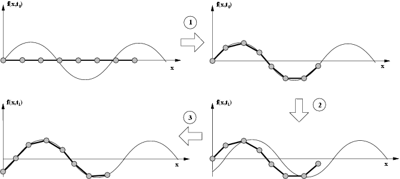
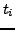

Next: 3 Implementation on embedded Up: Evaluation of a locomotion Previous: 1 Introduction


Next: 3
Implementation on embedded Up: Evaluation
of a locomotion Previous: 1
Introduction
|
 |
Figure 2: An example of the algorithm used to generate the control tables. The first two rows of the gait control table are calculated
The prototype of the worm-like robot, called ``Cube Revolutions'', is shown in figure 1a. It is composed of 8 similar linked modules, connected in phase. Therefore it can only move in a straight line, forward and backward. The first generation of the modules created, named Y1 (1b), were made of PVC and contains only one degree of freedom, actuated by a servo. Technical details and aditional information can be found in [5].
The locomotion of the robot is achieved by means of precalculated data matrix, that store the position of all the articulations at different time slots. This control data arrangement is denominated gait control table[1]) (GCT).
Each row
of the table contains the position of the articulations at instant

The proposed locomotion algorithm generates well-constructed gait control tables that allow the robot to move forward and backward. A wave propagation model is used for its calculation, building the tables from the parameters of the wave: amplitude, waveform, wavelength and frequency.
Figure 2 shows an example of how the algorithm calculates the first and second rows of the gait control table. It consist of two stages. First, the angles of the articulations are calculated by ``fitting the worm to the wave''. Then, the wave is shifted (that is, the time is incremented) and the robot is fitted to the wave again. These steps are repeated until the wave has move a distance equal to the wavelength.
The algorithm has a geometric approach and is based on rotations of 2D points, therefore, sine, cosine and arctan function are widely used.


Next: 3
Implementation on embedded Up: Evaluation
of a locomotion Previous: 1
Introduction